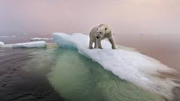

Why I'm Excited About the End of the World
Photo by Paul Souders https://worldfoto.com/
Mark Zuckerberg gave some great advice on a clip of his interview with Lex Friedman. Friedman asked him what advice he would give young people and he said something to the effect of: (1) make sure you surround yourself with the right people, or the kind of people that you will learn a lot from and (2) ask yourself what you are excited about in the future.
He also added focus on your health and relationships. But I already knew about those things. What struck me about his first answer is that it made me realize that the people I spent most of my time around in college did define a lot of who I am as a person. A lot of what I value in life is developed from the time I spent with long-time friends.
It was his second answer that stuck with me though. I also had no concrete idea of what I wanted out of life and had no interest in pursuing any career. There was little, if anything, in the world that interested me so much other than philosophy and becoming an academic. Thinking about Zuckerberg's advice now makes me want to deeply consider if there's anything I'm excited about now. If there are any developments or trends whose outcome I'm invested in. The only thing I can thing that I can think about is how humanity will have to deal with pending existential threats: climate change, nuclear war, a pandemic with a much higher fatality rate, etc.
Zuckerberg's advice did make me think a lot about how people will deal with the challenges of climate change on a global scale. Whether we will be able to allocate our financial and technological resources to come up with long-term solutions to reverse or mitigate effects of climate change on a large scale. It made me think about what I think is actually going to happen when the effects get worse: that we will find ways to carve out habitable spaces in the world but that only a certain class of people (the 1%, the upper-middle class, basically anyone with capital) will have access to these spaces. The rest of humanity will either die from the impending catastrophes wrought by climate change (famine, floods, extreme weather that dries up formerly habitable parts of the world) or fight their way to the habitable spaces carved out by the 1%.
I'm not exactly excited about this in a positive sense. I know a lot of people are going to die and suffer from this. But this is something that I've wondered about for a long time. How humanity will one day deal with existential threats. Will we come together to find a solution with all the resources with our disposal or will we fight each other so we can have the few habitable spaces available? Seeing how the world dealt with the COVID-19 pandemic and seeing how my own country (Lebanon) dealt with the collapse of its economy, I am inclined to think that we will head for the latter.
I am not that pessimistic as I once was about our place in the world or whether we deserve to die out in one big cosmic catastrophe. I think these challenges are something worth dedicating our lives to so that we can leave behind a better (or a slightly less damaged) world behind for future generations. It is a noble and worthwhile pursuit to be engaged in the effort to fight climate change, or if it is already too late, to mitigate the effects of the impending catastrophe. It is this sense of being part of a cause that is bigger than yourself, of sacrificing your time, effort, and resources for the well-being of generations down the line. It is this - being part of a collective effort to save ourselves and our future - that excites me.
Even if we fail.